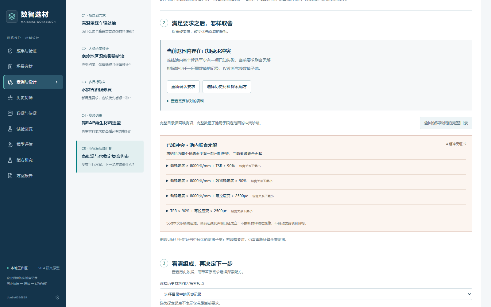

企业揭榜赛道 HY-01 课题一 · 2026年10月24日整理
数智选材参赛材料
先用简表和五案演示了解作品，再按需要查阅完整论文与可运行原型。
作品论文已整理为50页。本次重写按工程师的选材、比较和调整过程展开，数据与方法在相应章节说明。
官方作品截止时间：2026年10月25日中午12:00。报名与资格审核已完成，系统上传及回执由参赛者办理。
按用途选择材料
正式文档提供可编辑版和预览版；按系统实际字段选择格式与附件。
| 要求 | 材料 | 文件 | 用途 |
|---|---|---|---|
| 必交 | 项目简表 | PDF DOCX | 官方模板，集中说明任务、方案和软件过程指标。 |
| 必交 | 项目说明书 | PDF DOCX | 依次说明问题、机制、实施与应用。 |
| 软件作品必附 | 原型源码与证据 | ZIP | 解压后先读README.txt，再进入runtime启动。 |
| 可选 | 五案实际操作 | MP4 | 约2分48秒，连续原型操作与中文字幕。 |
| 可选 | 商业计划书 | PDF DOCX | 按官方六部分模板说明服务与经济核算。 |
| 可选 | 作品演示稿 | PPTX PDF | 10页，介绍机制、五案和产品化步骤。 |
| 技术补充 | 作品论文 | PDF DOCX | 50页，展开数据、方法、五案及计算研究。 |
阅读与上传顺序
- 简表、演示稿和操作视频用于快速了解；说明书与论文用于技术阅读。
- 论文第4至9章解释核心机制和五案，第3章与第10章说明数据及计算研究；附录列出接口与证据位置。
- 作品名称与报名记录统一，身份资料填写在系统指定位置，匿名文档的身份栏留空。
- 登录后核对格式、容量与附件数量，先上传简表、说明书和软件证明，再安排演示与技术附件。
- 逐项预览或下载检查，确认最终提交状态并保存回执。
五案连续操作
五案采用企业工作簿的历史性能值和构造要求，记录需求确认、候选取舍、配方探索与范围诊断。
案例界面


